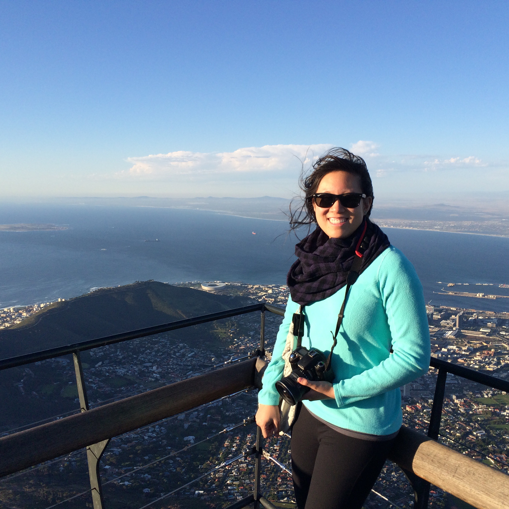
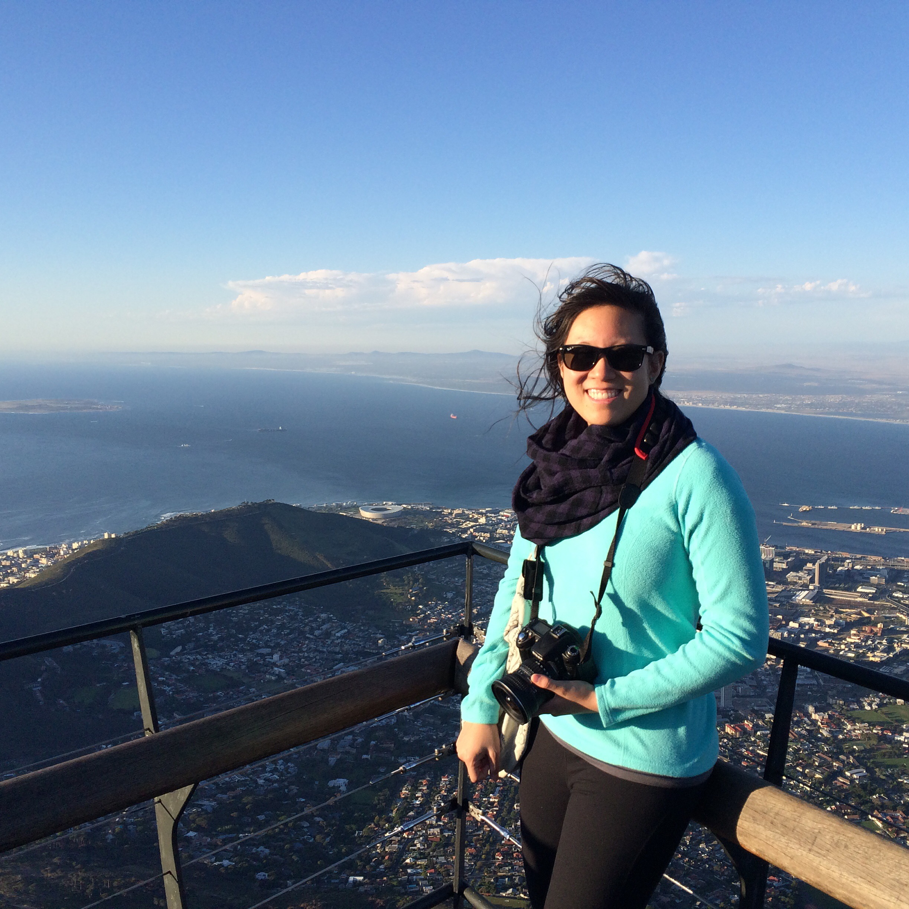
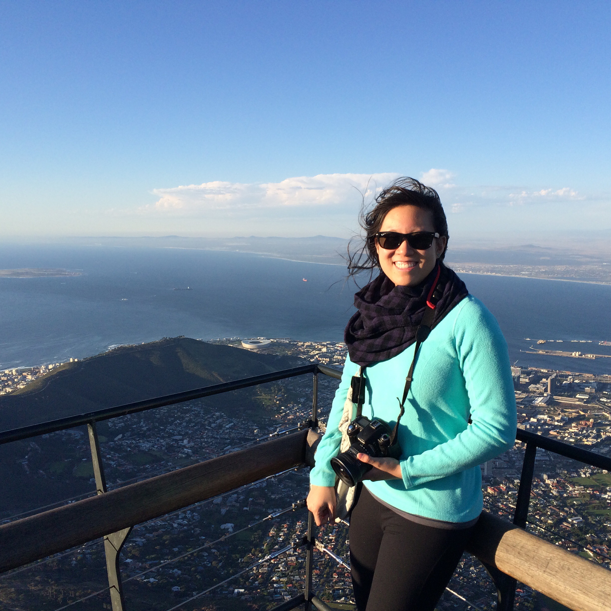

One thing I really love is traveling! Born in Germany and having lived in France, I've been lucky to experience multiple cultures. I've also been fortunate to be able to visit lots of different places, both through work and personal vacations. Hover over the pins to learn about some of my favorite places I've been to!

SouthAfrica
 

A work trip brought me to the middle of the Karoo Desert in South Africa to help build HERA dishes. It was a neat experience living in a radio-quiet, deserted location for a couple weeks, where I learned a ton about the instruments whose data I analyze and had fun experimenting with night photography of the dark, star-filled sky.

Cambodia/Thailand

In 2014 I traveled to Cambodia and Thailand. Angkor Wat was incredible, but a highlight of the visit was learning about the heroic Aki Ra at the Landmine Museum. I also enjoyed petting tigers and exploring islands in Thailand.
UK

Before a conference at Cambridge University, I took a road trip to Bath, Winderemere, Edinburgh, and London. It was my first time in the UK and I especially enjoyed Scotland and the quaint towns in the Lake District.